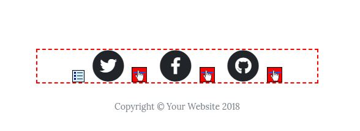
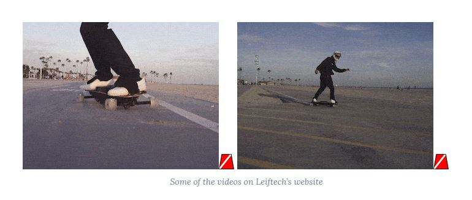
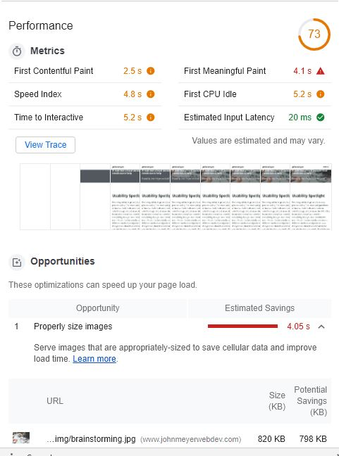

Checking My own Work
Last week was all about accessibility implementation which isn’t all that hard yet regularly ignored. I am not infallible however and may have skimmed over some accessibility standards on the very site you are looking at. Simple forgetfulness may be one of the most common reasons why a website isn’t up to date with accessibility. Thus I will spend this week analyzing my own work here to see what I can fix.
To quickly remind ourselves what we will be testing with I’ll summarize last weeks guidelines. The United States has a law called Section 508 which requires websites to include accessibility features for disabled users. Most other countries have a similar law in place making it a good idea to create compliant work from a legal perspective. To test this I will be running my site through WAVE and Google Lighthouse, 2 tools that can identify problems automatically. I want to make sure that I can resolve any issues that are critical for disabled users.
Issues with Images
Running WAVE revealed that I had a problem with image links on almost every page. The template I was using had social media icons that defaulted as empty. This should be an easy fix but it was one that I was totally unaware of simply due to ignorance. The template also had some low contrast text flagged in the header, again a simple fix that I didn’t notice. The one that was my fault was alt text. I had remembered to add alt text to my images but managed to miss 2 on W3. I was also flagged for repeating myself with links but as I said last week I didn’t feel that this was a problem.
When I did a few tests with Google Lighthouse I saw some more issues with images and the template. Most notably, when simulating mobile speeds, the header images on the site were grossly oversized. Those images alone were almost 900 KB, I wouldn’t want my pages to be over a MB yet here this image alone was almost there! Lighthouse also flagged the low contrast and alt text just like WAVE did reinforcing their importance.
Easy Fixes
My first fix was for the social media icons, simply adding a piece of text for each icon looked good and solved my error. I also cleaned up the missing alt text on one of the pages. This left me with my contrast and oversized images. I switched the images out for far more compressed ones that I liked better which increased my load times.The contrast issue seemed to be a miscalculation as the background is the same hue but the image is creating enough contrast to make it a non issue. This analysis helped me spot many things wrong with my own work that I can now try to fix ahead of time.
Give a Thumbs up if you liked the article!